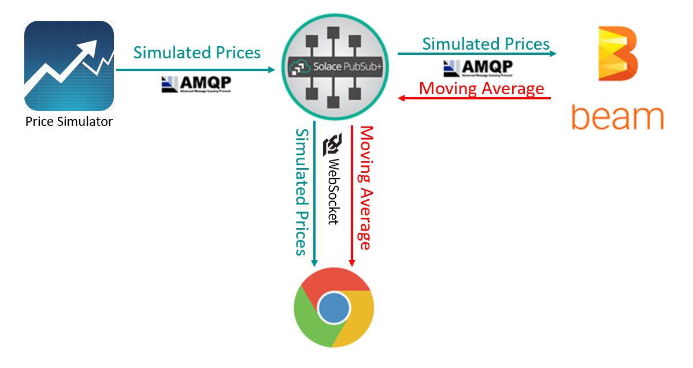

IE 11 only: If you are running this sample from the local filesystem, click the "Allow blocked content" button
in the popup below to enable JavaScript.

This is a simple example that subscribes to two streams - one stream of simulated stock prices for GOOGL and another stream for a 5 second moving average calculated by Apache BEAM